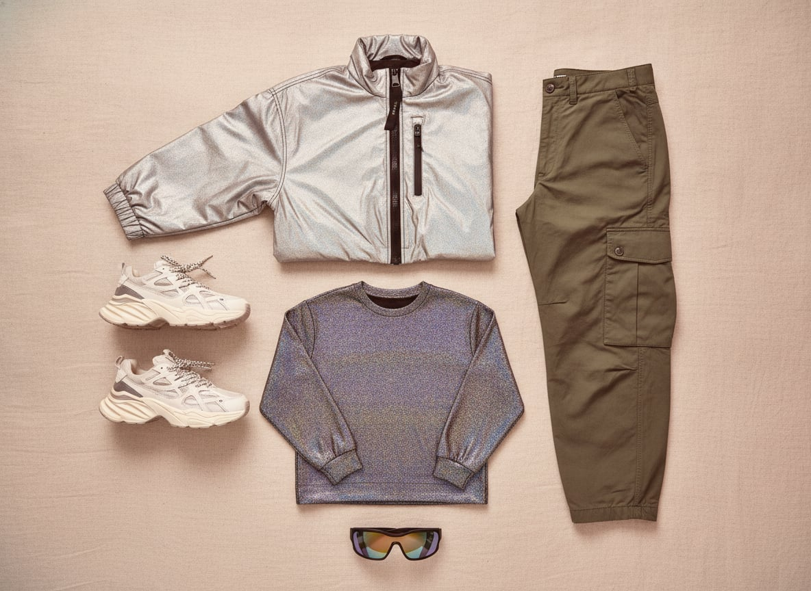
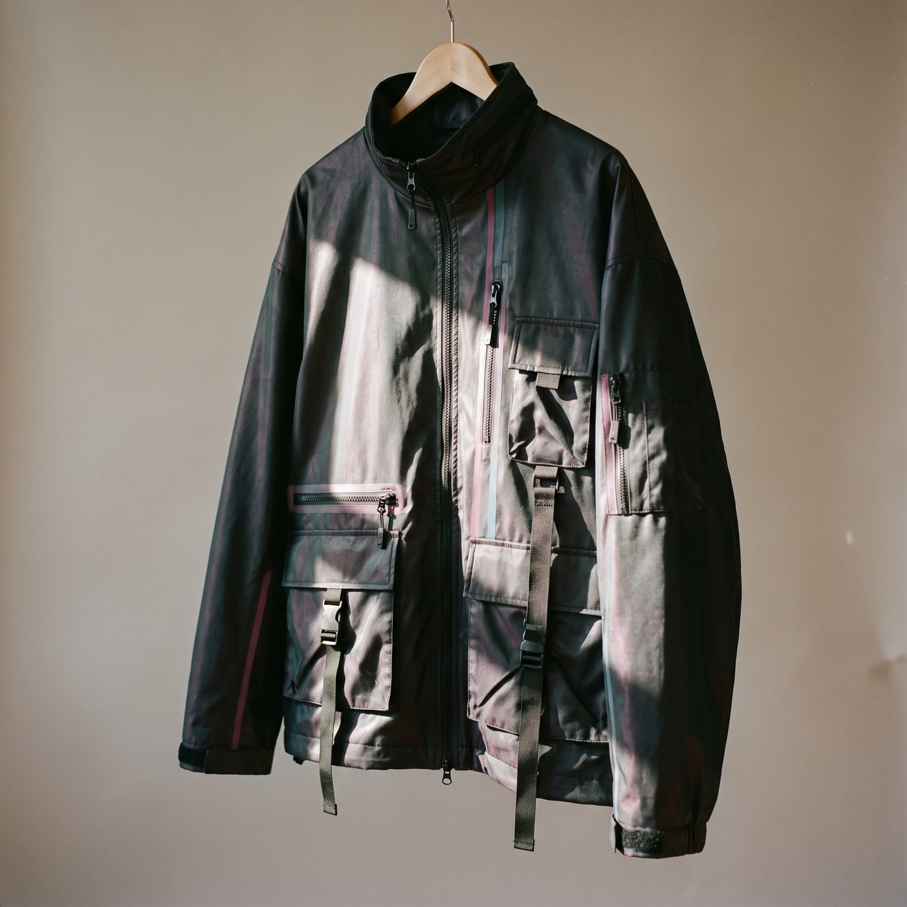
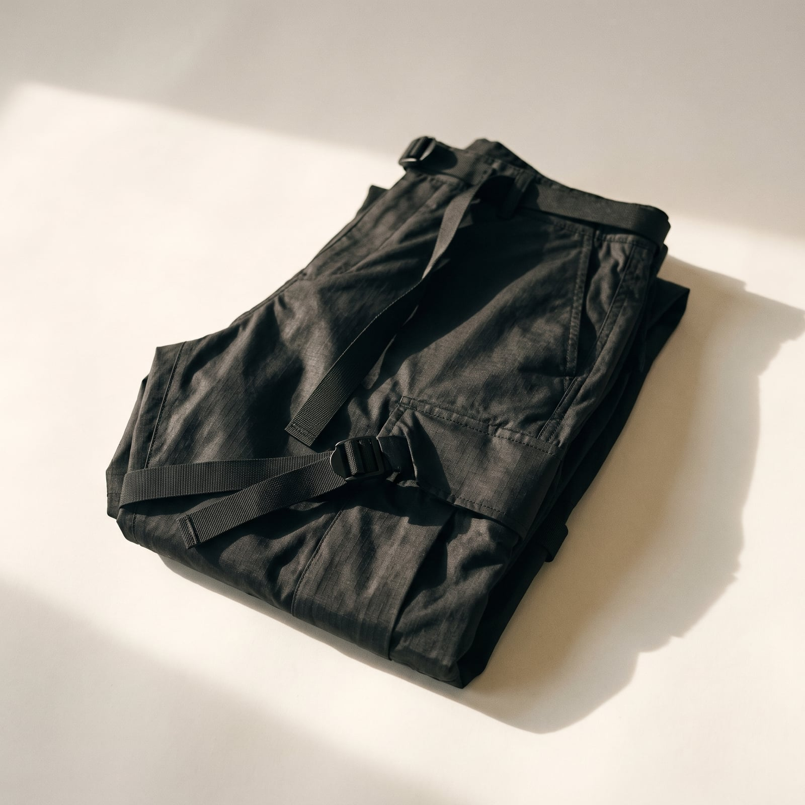
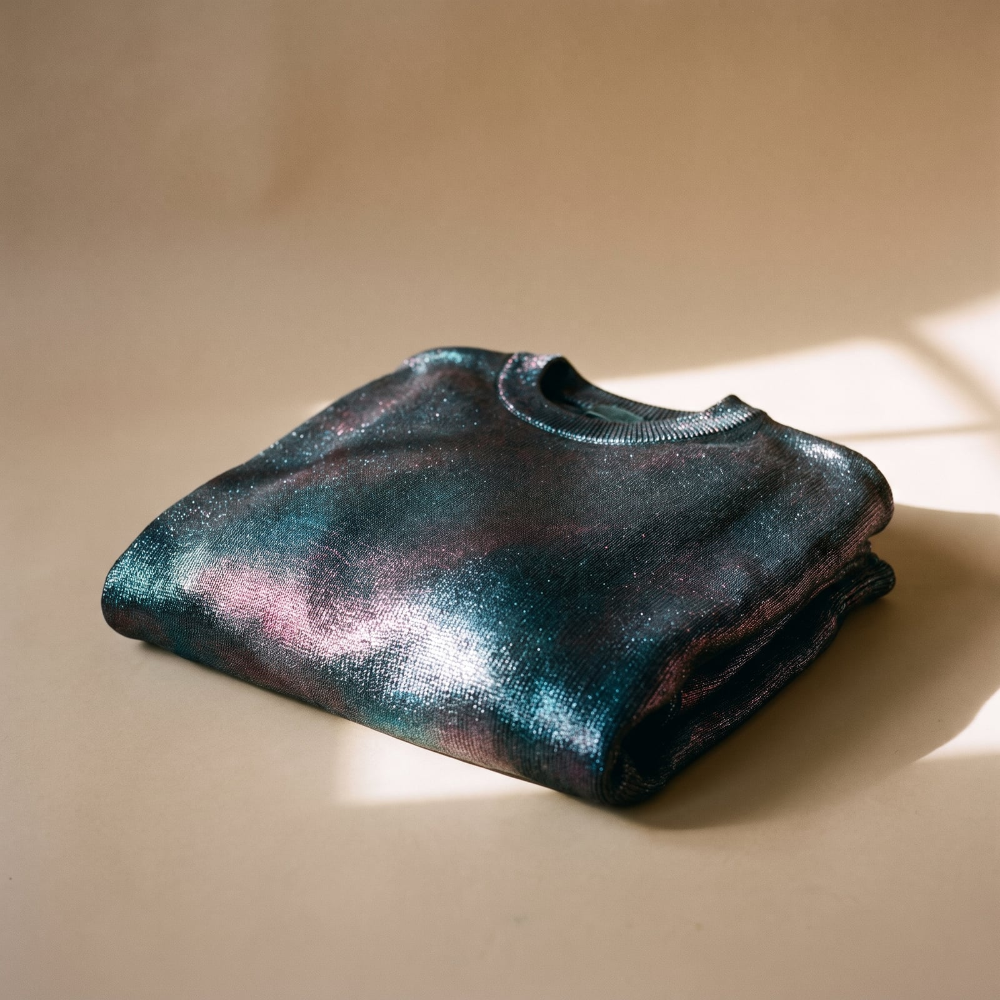
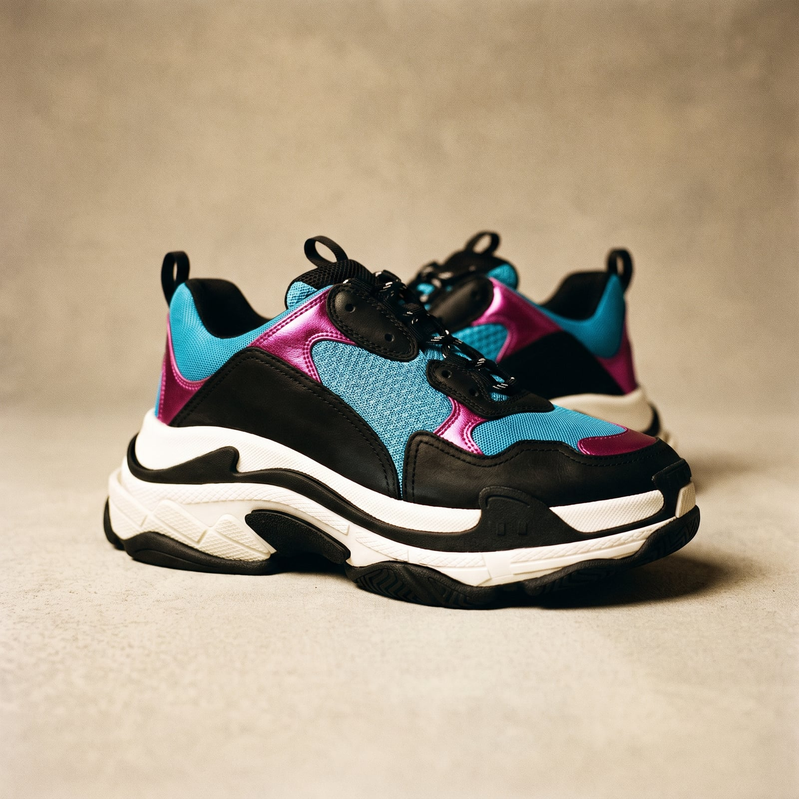
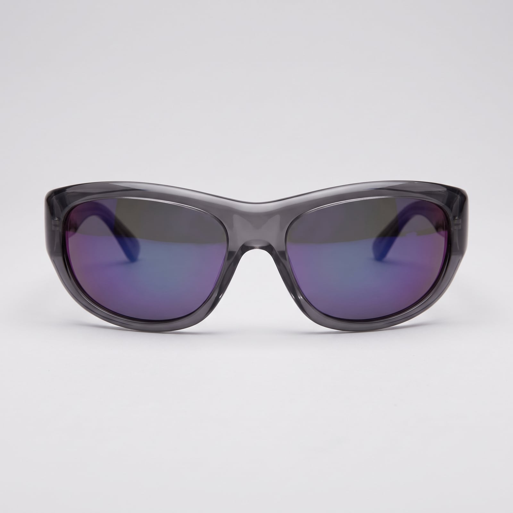

The Voltage
The look descends from two overlapping subcultures that both peaked around the millennium: the reflective, function-first uniform of 1990s UK rave culture — technical fabrics borrowed wholesale from outdoor brands because ravers needed to stay warm in a field until sunrise — and Y2K's mainstream fantasy of the near future, all metallics and low-slung technical trousers, sold everywhere from runway to mall. Both shared a conviction that clothes should look like they came from slightly later than they did.
The trademark is hardware and shine used for their own sake: reflective and metallic fabrics that catch strobe light on purpose, cargo pockets and straps that reference function without much of it, a palette of black punctuated by a single unmissable neon. Fit runs either very slim or very loose, rarely in between, because the whole point is silhouette as a statement rather than a compromise.
It suits people who dress for the version of the future they'd actually want to live in — who find most contemporary clothing a little too polite and would rather look like they're dressed for something that hasn't happened yet. There's real optimism buried in the aesthetic, under all that black and chrome: this is a wardrobe that still believes in the future as a destination worth dressing for.
- Reflective and metallic fabrics, chosen to catch strobe light
- Cargo pockets, straps, and buckles referencing function more than performing it
- A near-all-black palette broken by a single unmissable neon
- Silhouettes pushed to extremes — very slim or very loose, rarely between
- Technical outerwear treated as eveningwear, and vice versa


The Reflective Jacket
1990s UK rave culture adopted reflective and technical outdoor fabric wholesale — ravers needed to stay warm and visible walking to a field party at 4 a.m., and the same fabric happened to catch a strobe light beautifully on the dance floor.
Genuine reflective fabric at an accessible price.
Shop this →Real technical construction with recognizable design language.
Shop this →The designers most associated with rave-derived technical fashion at a runway level.
Shop this →
The Technical Cargo Pant
Cargo pockets and straps that reference military function without performing much of it became this wardrobe's default trouser, treating hardware as pure design vocabulary rather than actual utility.
The silhouette at an accessible price, lighter fabric.
Shop this →Real technical fabric and more considered hardware placement.
Shop this →The designers most responsible for elevating this exact silhouette.
Shop this →
The Metallic Top
Metallic and lamé fabrics moved from disco through Y2K's mainstream futurism, treating shine itself as the garment's whole design statement rather than an accent on top of one.
The shine and silhouette at an accessible price.
Shop this →Genuine metallic fabric from a house that lived through the original era.
Shop this →Designer-level construction in genuinely rare metallic textiles.
Shop this →
The Chunky Sneaker
Exaggerated, technical-looking sneaker soles became a genuine fashion statement in the late 2010s, borrowing directly from the same rave-and-outdoor technical vocabulary as the rest of this wardrobe.
Genuine technical sole construction at a broadly accessible price.
Shop this →Real technical performance heritage with strong cultural cachet.
Shop this →The two names most associated with maximalist sneaker silhouettes.
Shop this →
The Wraparound Sunglasses
Wraparound, futuristic frames borrow directly from both rave culture's function-first eyewear and Y2K's aesthetic obsession with looking like the near future — a shape with no real precedent in traditional eyewear design.
The shape at the lowest possible price.
Shop this →Genuine performance-eyewear construction with real Y2K cultural cachet.
Shop this →Designer-level materials and finish on the exact silhouette this look is built around.
Shop this →Commit fully to the single neon accent against the near-all-black palette — the contrast is the entire design idea, and a second or third bright color competing for attention dilutes the effect the outfit is built around. Push the silhouette to a genuine extreme, very slim or very loose; a moderate, in-between proportion reads as indecisive rather than deliberate.
Buy reflective and technical fabrics that actually perform under artificial and strobe light — a matte substitute that looks similar in daylight will read as flat and lifeless in the setting this wardrobe is actually built for.
Don't let the palette drift toward several bright colors at once — the whole design logic depends on near-total black broken by exactly one unmissable color, and adding a second undoes the contrast that makes the first one work.
This is a nightlife-and-warehouse wardrobe built for artificial light and a specific kind of crowd, and it reads as costume in daylight or in an ordinary office — the reflective fabric that looks striking under a strobe just looks strange under fluorescent light. Save it for rooms built for exactly this.
Mesh and lighter technical fabrics in the same metallic finishes, less layering, same reflective accents regardless of the actual need for visibility.
The reflective jacket gets a heavier technical liner, still catching every bit of available light, with insulated cargo pants underneath.
Already built for this -- the technical shell is genuinely waterproof, which was always half the point of choosing it in the first place.
A heavier technical parka, still reflective, with boots built for actual winter sport rather than just looking like they might be.
Formality here means more metallic, not less -- the loudest jacket in rotation, worn somewhere that will actually have the lighting to do it justice.

Berlin, Tokyo's Shibuya district at night, and wherever the next warehouse party is being whispered about rather than advertised.
A city's appeal is measured almost entirely by its nightlife infrastructure — the daytime hours are mostly recovery time before the actual reason for the trip starts.
Cyberpunk fiction — Gibson, obviously — read partly as aesthetic reference and partly as genuine prediction, and rave-culture oral histories that treat the scene with real historical seriousness.
Whatever's trending in three different feeds at once gets skimmed constantly, less for information than for staying ahead of what everyone else will be talking about next week.
Find it on Amazon →Techno and hyperpop, plus whatever's dropping on a label nobody's heard of yet but everyone will in six months — being early is treated as a genuine skill.
A set gets judged on build and transition as much as any individual track, discussed afterward with real technical detail.
Listen on YouTube →LED strip lighting throughout, reprogrammed more often than most people rearrange furniture, and a setup built around a sound system rather than a sofa.
Reflective surfaces everywhere, chosen as much for how they catch changing light as for any conventional decorating logic.
See more on Pinterest →Raves that start after most people's bedtime and run well past it, and a genuine interest in emerging producers followed with the dedication other people reserve for sports.
A wardrobe that gets more curatorial attention than the furniture, planned days in advance for a single night out.